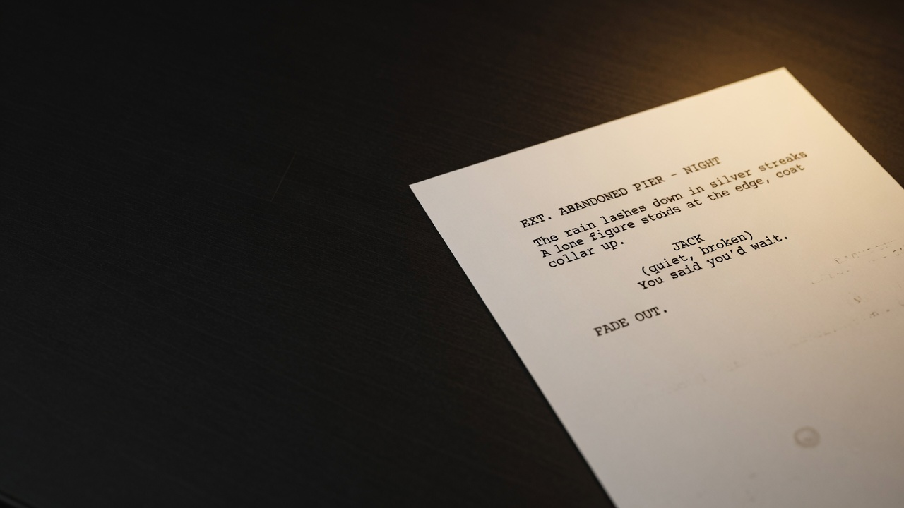
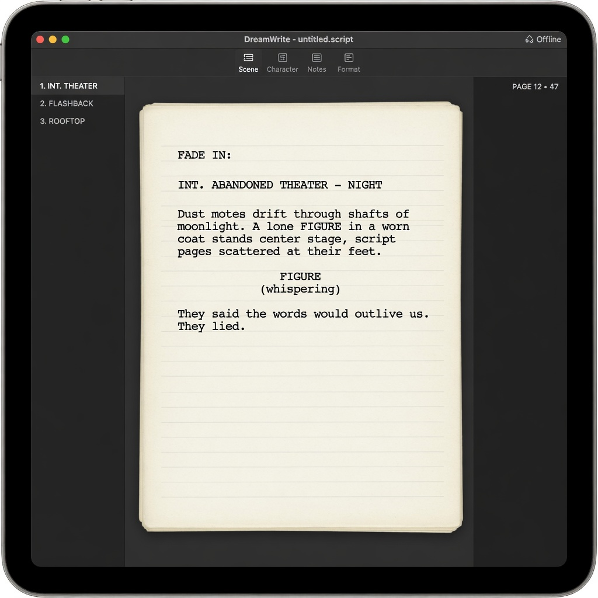

Script
Courier Prime on clean paper. Industry margins, 54 lines/page, CONT'D/MORE, Tab/Enter flow, multi-page stack, PDF with embedded font.
Offline · No accounts · Scripts stay yours
DreamWrite is carbon-black ink-and-paper screenwriting: industry format, board, and timeline as one workspace. No subscriptions. No telemetry. No network by default.

One entity, three views: a scene is a script block, a board card, and a timeline event.
Courier Prime on clean paper. Industry margins, 54 lines/page, CONT'D/MORE, Tab/Enter flow, multi-page stack, PDF with embedded font.
One pagination engine for screen, stats, and PDF — page count matches what you export.
Full command history. Typing merges. Ctrl/Cmd+Z restores prose — nothing silent-deleted.
Middle-mouse hold for a ≤8-item contextual ring. Flick to mark, drag to pan, dead-zone cancel.
Integer ticks with display calendars (BBY/ABY bookends). Lane packing, scene sync, jump to script.
Infinite canvas: notes, scene-cards, nested boards, templates, connectors, image assets, tables.
Offline full-text across script, cast, timeline, and board. Characters & locations scan from script.
Fountain in/out · PDF · project folders with content-addressed assets · atomic saves · v1 files still open.
No accounts, no cloud, no analytics. Projects live in Documents/DreamWrite on your machine.

Monochrome ink identity. Clean white paper. IBM Plex for chrome, Courier only on the page.
platen:// assetsDownload the latest release for your OS. Unsigned mac builds: right-click → Open the first time.
SmartScreen may warn on unsigned builds — “More info” → Run anyway if you trust the source.
arm64 or x64).Mac packages are built on macOS CI. If a release only has Windows assets, check Actions or build with bash scripts/pack-mac.sh.
git clone https://github.com/liminallyspaced/dreamwrite.git cd dreamwrite npm install npm start
# Windows package (installer + portable) npm run pack:win # macOS package (on a Mac) bash scripts/pack-mac.sh
Keeping the product honest about scope.
Needs accounts and a server — conflicts with “scripts stay on your machine.”
Network by default is a non-goal. Assets are local and content-addressed.
Separate deliverable if ever. Core app stays offline.